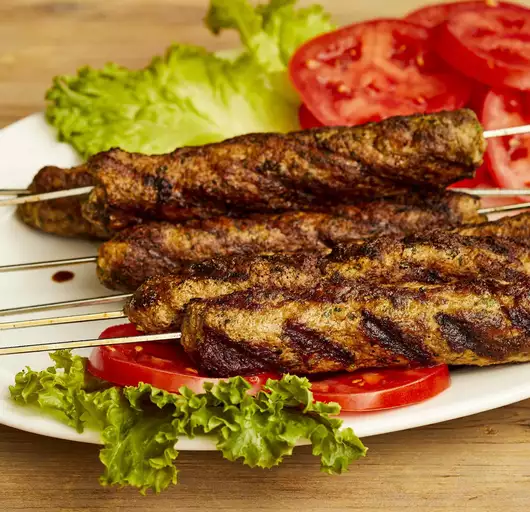

Homepage
Kebab

Description:
Kebab is a type of cooked meat dish that originates from cuisines of the
Middle East. Many variants of the category are popular around the world,
including the skewered shish kebab and the doner kebab with bread.
Ingredients:
- Meat
- Tortilla (optional)
- Tomato
- Sauce of choice
- Garlic
Steps:
- Get yourself some cooked meat.
- Cut it.
- Add ingredients as listed above.
- Consider it done! You may enjoy it.